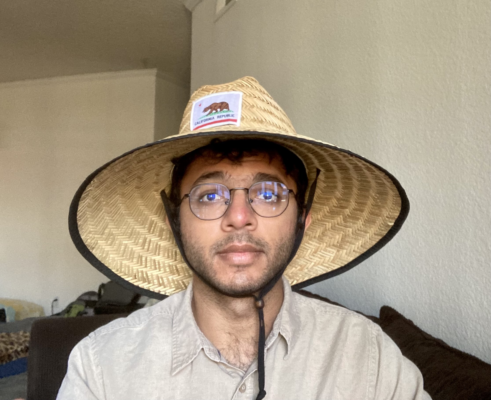

Ishit Mehta
About
I am a PhD student at UC San Diego studying visual computing with Prof. Ravi Ramamoorthi and Prof. Manmohan Chandraker. Previously I was at IIIT Hyderabad working on Computer Vision and Computational Photography, advised by Prof. PJ Narayanan. I have also spent time at Microsoft Research and Adobe Research.
Publications
Modulated
Periodic Activations for Generalizable Local Functional
Representations, ICCV 2021 (to appear)
Ishit Mehta, Michaël Gharbi, Connelly Barnes, Eli Shechtman, Ravi Ramamoorthi, Manmohan Chandraker
[Project Page] [Paper] [BibTex]
Ishit Mehta, Michaël Gharbi, Connelly Barnes, Eli Shechtman, Ravi Ramamoorthi, Manmohan Chandraker
[Project Page] [Paper] [BibTex]
Smartphone-based Driver License testing: Demo Abstract, ACM
SenSys 2019
Anurag Ghosh, Vijay Lingam, Ishit Mehta, Akshay Uttama Nambi, Venkata N Padmanabhan, Satish Sangameswaran
[Paper]
Anurag Ghosh, Vijay Lingam, Ishit Mehta, Akshay Uttama Nambi, Venkata N Padmanabhan, Satish Sangameswaran
[Paper]
ALT: Towards Automating Driver License Testing Using Smartphones, ACM
SenSys 2019
Akshay Uttama Nambi, Ishit Mehta, Anurag Ghosh, Vijay Lingam, Venkata N Padmanabhan
[Paper]
Akshay Uttama Nambi, Ishit Mehta, Anurag Ghosh, Vijay Lingam, Venkata N Padmanabhan
[Paper]
Defocus Magnification using Conditional Adversarial Networks,
WACV 2019
Parikshit Sakurikar, Ishit Mehta, PJ Narayanan
[Paper]
Parikshit Sakurikar, Ishit Mehta, PJ Narayanan
[Paper]
Hams: Driver and Driving Monitoring using a Smartphone,
MobiCom 2018
Akshay Uttama Nambi, Shruthi Bannur, Ishit Mehta, Harshvardhan Kalra, Aditya Virmani, Venkata N Padmanabhan, Ravi Bhandari, Bhaskaran Raman
[Paper]
Akshay Uttama Nambi, Shruthi Bannur, Ishit Mehta, Harshvardhan Kalra, Aditya Virmani, Venkata N Padmanabhan, Ravi Bhandari, Bhaskaran Raman
[Paper]
Structured Adversarial Training for Unsupervised Monocular Depth
Estimation,
3DV 2018
Ishit Mehta, Parikshit Sakurikar, PJ Narayanan
[Paper]
Ishit Mehta, Parikshit Sakurikar, PJ Narayanan
[Paper]
RefocusGAN: Scene Refocusing using a Single Image,
ECCV 2018
Parikshit Sakurikar, Ishit Mehta, Vineeth N Balasubramanian, PJ Narayanan
[Paper]
Parikshit Sakurikar, Ishit Mehta, Vineeth N Balasubramanian, PJ Narayanan
[Paper]
Beyond Ocrs for Document Blur Estimation,
ICDAR 2017
Pranjal Kumar Rai, Sajal Maheshwari, Ishit Mehta, Parikshit Sakurikar, Vineet Gandhi
[Paper]
Pranjal Kumar Rai, Sajal Maheshwari, Ishit Mehta, Parikshit Sakurikar, Vineet Gandhi
[Paper]
SynCam: Capturing Sub-Frame Synchronous Media using Smartphones,
ICME 2017
Ishit Mehta, Parikshit Sakurikar, Rajvi Shah, PJ Narayanan
[Paper]
Ishit Mehta, Parikshit Sakurikar, Rajvi Shah, PJ Narayanan
[Paper]
Contact
ibmehta at
eng
dot ucsd
dot edu